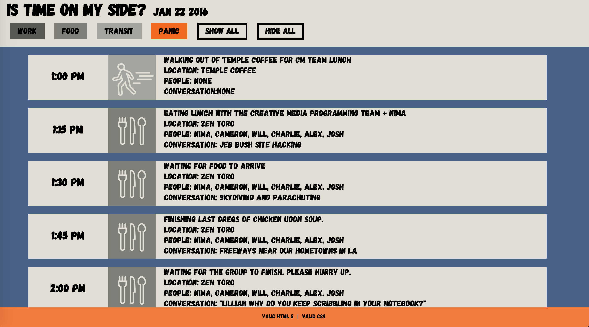
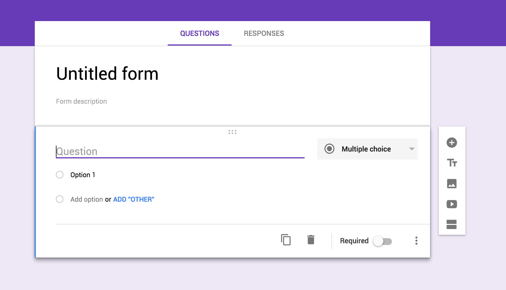
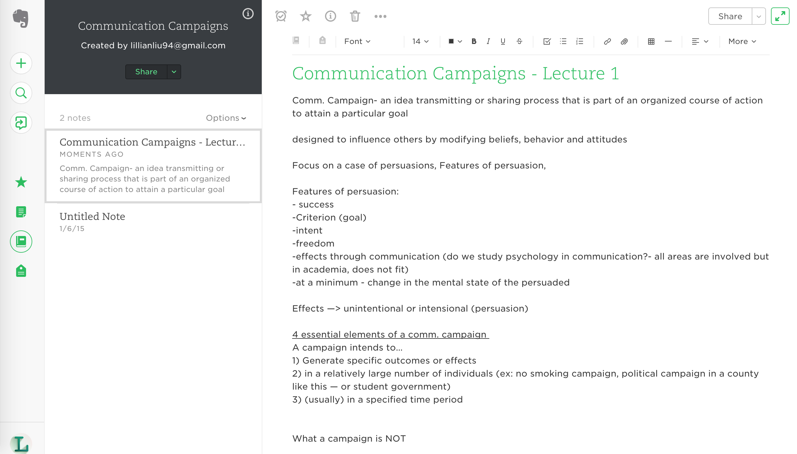

January 28, 2016
Time is on My Side

In the exercise 'Time is on my Side'. I went with a simple grid format with a top nav bar to sort out the four sections that I had grouped my events under. The panic button is orange because it is meant to be something that stands out from all the rest. I thought it would be funny to center the story of the site into panic, since most people, when they select a portion of their day do not experience as much panic as I had experienced that day. Losing my keyes was definitely an anomaly and I wanted to highlight that. The other buttons are sorted into a greyscale gradient to show that there is some distinction between the three, but that in the end, panic (as in all things in life), is the element that is the most important.
The 'hide all' and 'show all' buttons are styled the same way and also stand out from muted grey. the 'show all' button serves to be a kind of reset and the 'hide all' button, as a way to clear the board.
January 18, 2016
Google Forms

This is Google Forms. I often use google forms to create forms for PIXEL graphic design club. We do these to gain feedback from members and keep track of opinions, sruveys, and transportation. It is particularly useful because of the drag function in creating options as well as the diffierent fields that can but inputted in each question. This has been immensely useful because it is so versatile. It's also a good platform for switching into other tools such as google sheets.
January 12, 2016
Evernote Interface

I’ve used Evernote ever since my first year of college and the interface has changed a lot in terms of usability and aesthetic appearance over the years. According to the Nielsen Norman Group’s article ‘Usability 101: Introduction to Usability’,determinants of good usability include: learnability, efficiency, memorability, errors, and satisfaction. To summarize:
- Learnability- How easily does the user complete basic tasks when first encountering the design?
- Efficiency - How fast can they use it once learned?
- Memorability - How quickly can someone recall the system once away from it for a while?
- Errors- How many errors do users make, how severe are these errors, and how easily can they recover from the errors?
- Satisfaction - pleasure from using the design (quirkiness)
Does the new Evernote interface, introduced recently over the past year reflect good learnability, efficiency, memorability, errors, and satisfaction? What I liked about the new updates were the improvements made to the navigation on the left-hand side. Since I’ve been using this program for years, I have 62 notebooks and hundred of notes to organize. Yet, I only use a few notebooks and a few ongoing notes regularly. I put these on ‘shortcuts’ and they marked off according to file type through visual icons on the side. You can add tags to help locate the file later on and there is also a section for recent notes, displaying recently edited documents. All in all, I picked up Evernote quite quickly and now use it every day for personal and academic work. The pleasing appearance, while having no effect on usability, give me satisfaction (see above) and keeps me coming back as a regular user.